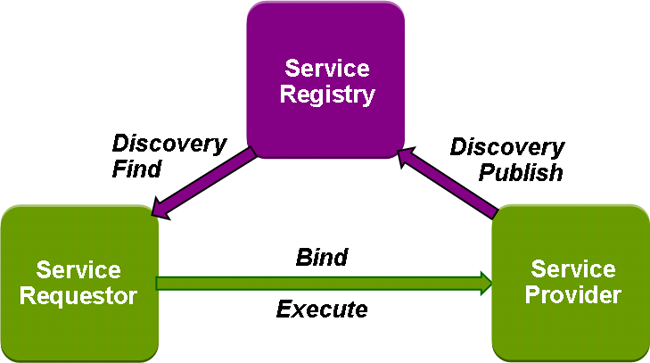
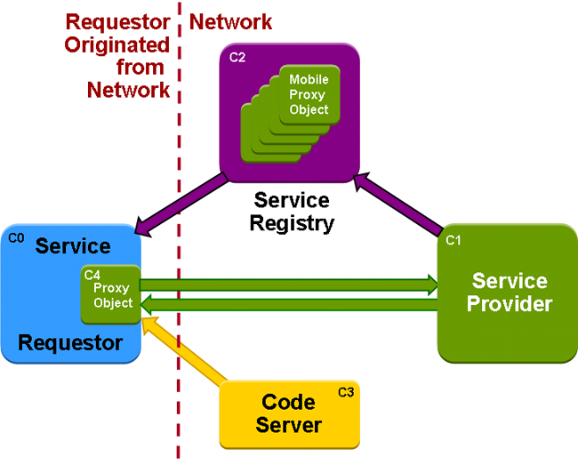
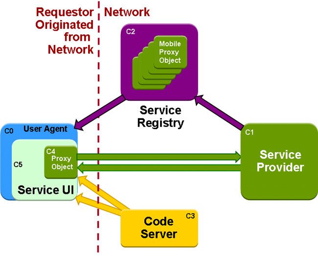

package sorcer.arithmetic;
import java.rmi.RemoteException;
import sorcer.service.Context;
public interface Adder {
public Context add(Context context) throws RemoteException;
}
package sorcer.arithmetic;
import java.rmi.RemoteException;
import sorcer.service.Context;
public class ArithmeticProviderImpl implements ArithmeticRemote {
public Context add(Context context) throws RemoteException;
public Context subtract(Context context) throws RemoteException;
public Context multiply(Context context) throws RemoteException;
public Context divide(Context context) throws RemoteException;
}
package sorcer.arithmetic;
import sorcer.arithmetic.Adder;
import sorcer.arithmetic.Divider;
import sorcer.arithmetic.Multiplier;
import sorcer.arithmetic.Subtractor;
public interface ArithmeticRemote extends Adder, Subtractor, Divider, Multiplier, Remote {)

package sorcer.ui.serviceui.UIDescriptorFactory in SORCER
package net.jini.lookup.entry;
// imports...
public class UIDescriptor extends AbstractEntry {
public String role;
public String toolkit;
public Set attributes;
public MarshalledObject factory;
//...
}
package net.jini.lookup.ui;
public interface MainUI {
String ROLE = "net.jini.lookup.ui.MainUI";
}
package sorcer.arithmetic.ui;
import javax.swing.JFrame;
import net.jini.lookup.ui.MainUI;
public class ArithmeticFrameUI extends JFrame
implements MainUI {
//...
}
javax.accessibility.Accessible
package net.jini.lookup.ui.attribute;
public class AccessibleUI
implements java.io.Serializable {
public boolean equals(Object o) {}
public int hashCode() {}
}
package net.jini.lookup.ui.attribute;
import java.util.*;
public class Locales
implements java.io.Serializable {
public boolean isLocaleSupported(Locale locale) {}
public Locale getFirstSupportedLocale(
List locales) {}
public Iterator iterator() {}
public Set getLocales() {}
//...
}
package net.jini.lookup.ui.attribute;
import java.util.*;
public class RequiredPackages
implements java.io.Serializable {
public Iterator iterator() {}
public String getVersion(String packageName) {}
public Map getRequiredPackages() {}
}
net.jini.lookup.ui.factory):
getJComponent() declared in interface JComponentFactory
or getPanel() declared in interface PanelFactorygetJFrame() declared in interface JFrameFactory
or getFrame() declared in interface FrameFactorygetJDialog() declared in
JDialogFactory
or getDialog() declared in DialogFactory
getJWindow() declared in
JWindowFactory
or getWindow() declared in
WindowFactory
package sorcer.ui.serviceuiUIDescriptor.factory)
package net.jini.lookup.ui.attribute;
import java.util.*;
public class UIFactoryTypes
implements java.io.Serializable {
public boolean isAssignableTo(Class classObj) {}
public Iterator iterator() {}
public Set getTypeNames() {}
}
UIDescriptor.toolkit = package name of primary UI toolkit used by UI
"javax.swing"
"java.awt"
DialogFactory
FrameFactory
PanelFactory
WindowFactory
JDialogFactory
JFrameFactory
JComponentFactory
JWindowFactory
package net.jini.lookup.ui.factory;
import javax.swing.JFrame;
public interface JFrameFactory
extends java.io.Serializable {
String TOOLKIT = "javax.swing";
String TYPE_NAME =
"net.jini.lookup.ui.factory.JFrameFactory";
JFrame getJFrame(Object roleObject);
}
public String role; public String toolkit; public Set attributes; public MarshalledObject factory;
UIDescriptor descriptor = new UIDescriptor();
Class c = RMIClassLoader.loadClass(
"http://sorcer.cs.ttu.edu:9000/arithmetic-ui.jar",
"package sorcer.ui.serviceui.UIFrameFactory");
Object factory = c.newInstance();
descriptor.factory = new MarshalledObject(factory);
public final Object getUIFactory(final ClassLoader parentLoader)
throws IOException, ClassNotFoundException {}
Object uiFactory = selectedDescriptor.getUIFactory(
serviceItem.service.getClass().getClassLoader());
sorcer.ui.serviceui.UIFrameFactory implements JFrameFactoryJFrameFactory frameFactory = (JFrameFactory) uiFactory; JFrame jff = frameFactory.getJFrame(serviceItem); jff.setLocation(100, 100); jff.setVisible(true); //...
public class AritmeticUI extends JPanel {
private ArithmeticRemote server;
public AritmeticUI (Object obj) {
this.servcer = (ArithmeticRemote)obj;
//...
public UIDescriptor getMainUIDescriptor() {
// Associate the service UI as a component
UIDescriptor uiDesc = null;
try {
uiDesc = UIDescriptorFactory.getUIDescriptor(
MainUI.ROLE,
new UIComponentFactory(new URL[]{new URL(urlbase +
"arithmetic-ui.jar")},
"sorcer.arithmetic.ui.ArithmeticUI"));
} catch(Exception ex) {
ex.printStackTrace();
}
return uiDesc;
}
public UIDescriptor getMainUIDescriptor() {
UIDescriptor uiDesc = null;
try {
uiDesc = UIDescriptorFactory.getUIDescriptor(
MainUI.ROLE,
new UIFrameFactory(new URL[] {new URL(Env.getHttpCodebase() +
"cataloger-ui.jar")},
"sorcer.core.provider.catalog.CatalogerUI"));
} catch (Exception ex) {
ex.printStackTrace();
}
return uiDesc;
}
public UIDescriptor getMainUIDescriptor() {
UIDescriptor uiDesc = null;
try {
uiDesc = UIDescriptorFactory.getUIDescriptor(MainUI.ROLE,
new UIComponentFactory(new URL[] { new URL(Env
.getWebsterUrl()
+ "/cataloger-ui.jar") }, CatalogerUI.class
.getName(), true));
} catch (Exception ex) {
ex.printStackTrace();
}
return uiDesc;
}
sorcer.core.provider.ServiceProvider {
/* service provider genetic properties */
name = "Smart Arithmetic";
description = "Example of a SORCER smart proxy provider";
interfaces = new String[] { "sorcer.arithmetic.provider.Arithmetic" };
entries = new Entry[] { ArithmeticUI.getUIDescriptor(),
ServiceProvider.getUIDescriptor(),
new Comment("It uses sorcer.arithmetic.Arithmometer for smart proxying"),
new Location("3", "310", "CP TTU") };
// smart proxy
smartProxy = new SmartArithmometer();
}
package sorcer.ui.serviceui.UIDescriptorFactory in SORCER